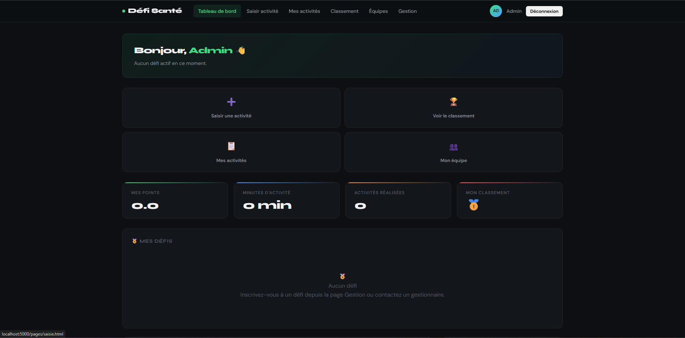
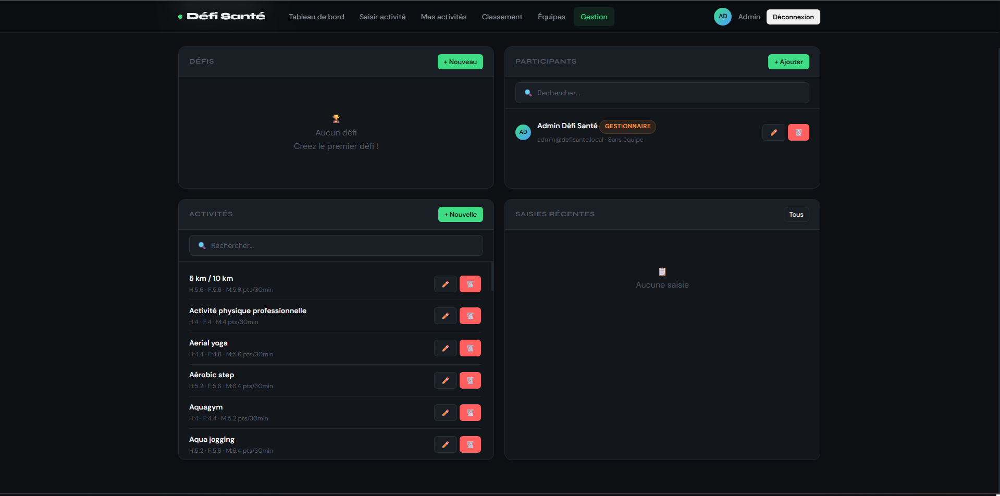
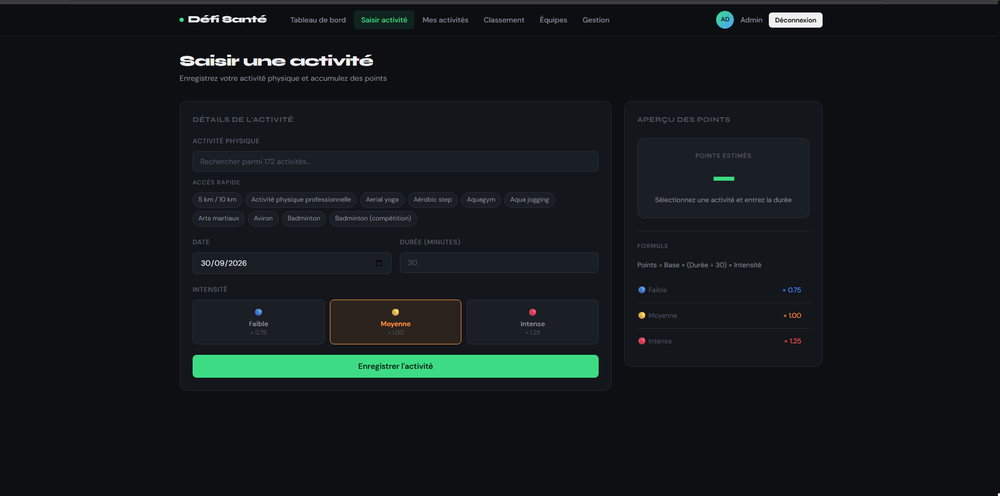

DéfiSanté.
Plateforme de sensibilisation et de suivi des habitudes de vie encourageant l’activité physique, une alimentation équilibrée et un mode de vie sain.

Contexte et problématique
Le projet Défi santé vise à encourager les membres d'une communauté (une école, une entreprise, un groupe quelconque) à développer et à maintenir de saines habitudes de vie, notamment par la pratique de l’activité physique. Le projet fait également la promotion d’une saine alimentation et encourage les gens à adopter un bon équilibre de vie.
Objectifs
Missions principales
- Une API Back-end en Flask/Python
- Gérer l'ensemble des données
- Stocker les données dans une base PostgreSQL.
- Sécuriser l'API.
- Définir et documenter les routes avec OpenAPI/Swagger.
- Une application Front-end Web
- Permettre aux participants et aux organisateurs d'utiliser le système.
- Fournir des interfaces différentes selon le type de compte.
- Être fonctionnelle, conviviale et robuste
Étapes de réalisation
- Développement d'une API REST avec Flask et Python pour gérer les données du défi.
- Conception et gestion d'une base de données PostgreSQL pour les participants, équipes, activités, défis et participations..
- Création des routes API permettant la gestion des différentes ressources de l'application.
- Mise en place de la documentation de l'API avec OpenAPI/Swagger.
- Développement d'une interface Front-end destinée aux participants et aux organisateurs.
- Gestion de comptes et de droits différents selon le profil utilisateur.
- Conteneurisation de l'environnement avec Docker Compose afin de faciliter l'exécution et les tests du projet.
- Utilisation de GitHub et des Pull Requests pour intégrer et tester les fonctionnalités développées
En images


Ce que j'en retiens
Ce projet m'a permis de renforcer mes compétences en Docker et en développement d'API avec Flask. Il a également été très enrichissant sur le plan professionnel, car j'ai dû m'adapter à un nouvel environnement de travail et à de nouvelles méthodes de collaboration. J'ai notamment rencontré des difficultés lors de la création et de la gestion des routes de l'API, qui ont demandé beaucoup de temps et de rigueur. Les échanges avec le maître de stage ont également parfois été complexes, notamment en raison de l'évolution régulière des besoins et de l'apparition de nouvelles fonctionnalités, ce qui nous a parfois conduits à revoir ou abandonner certaines parties du travail déjà réalisées.